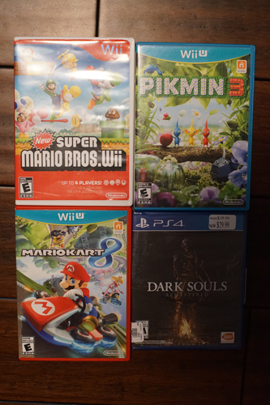
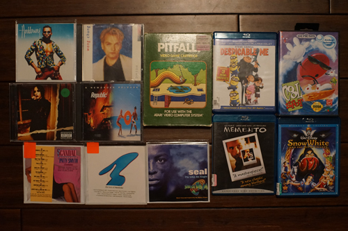

I'm sure you are all closely following all of Volks DD announcements like I am. I'm placing my bets on DD Anya Forger being a new smaller size of doll "Dollfie Cafe" around 1/6 scale.
I was getting uncomfortably close to the end of the 7 day return period so I did a quick Goodwill run. They'll only give you a gift card so I really needed to find something since I don't get many chances to visit Goodwill. I totally lucked out! I found a few games before anyone else grabbed them.
I already have this one but Ryan doesn't.
For Ryan. The price was right. We've been watching one of our friends play it on his PS5 recently. It's not cute so I'm not interested.
Half of my gamer haul is going to Ryan but I'm happy I found them after my bad mouse luck. I was so worried I wasn't going to make it back and be stuck with broken mouse garbage and -$5. I guess I shouldn't admit here I don't own a WiiU. I will someday though!
I had another lovely shopping trip today. I'm in heaven right?? I went with Ryan and the owner of my Hina NFT. We stopped in a few local stores and chatted with the owners and got to experience the days of getting deals because the owner enjoyed speaking to us. It was nice!
Two 28 year old twins caught me pulling out all the new wave CDs and started chatting with me about it. They even recommended a record store in the same mall that we didn't know about. They kept trying to recommend me Pet Shop Boys and The Sundays.
I bought it for Ryan but I want it too.
I'm so happy!! They had Points on a Curve AND The Warmer Side of Cool as well, but I already own them. Only Huang Chung is left in their discography that I'm looking to own.
For Ryan! I redrew this album cover but made him cute. I will try again and make him even cuter.
Newer than I wanted (1993), but I'll still try it happily.
Oops bought a compliation! Not quite The Warrior, but I'll listen to this and see if I do need to keep seeking out The Warrior.
I skipped it at $3 because I want to buy the actual albums instead of greatest hits. I later decided when I found the $2 copy that I never find New Order and I can afford the actual albums when I see them eventually.
Ryan bought it for his dad who excitedly showed him pitfall just a few weeks ago.
Space Jam? Seal? wtf. I have never seen space jam and probably never will.
Ryan said he'll watch it with me.
Ryan's
Ryan's. No idea what this is.
Ryan's
Not pictured:
For some reason these junk games end up like $10+ most the time. WHY. anyway I love picross
I recently bought a pair of Hori Split Pad Pro for me and a pair of Split Pad Compact for Ryan. They both feel cheaper than joycons but the pro model felt even cheaper. The buttons on the compact are all hard plastic, while the pro has a few rubber buttons. The pro, which has the wings, didn't fit particular well in Ryan's or my hands. Compact was more comfortable for both of us. The compact is larger than joycons, so they probably wont fit in your case. There is no hope of the pro fitting in any case. There's a significant space between the edge of the pro and the screen of the switch. The gap on the compact is much smaller.
There's my review! I returned my pro model and might buy a compact someday. Ryan seems to be pleased with his compacts. They're still rather expensive at around $50 and still feel a little cheap but I definitely recommend the compact over the pro if you are considering them.